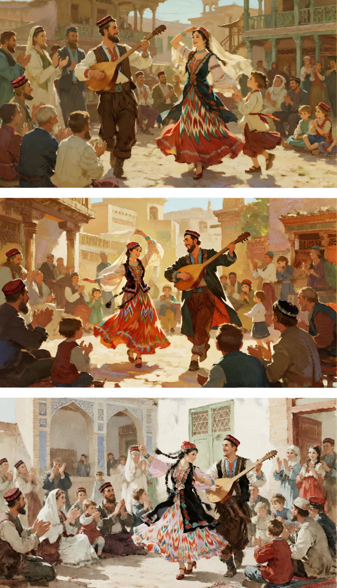
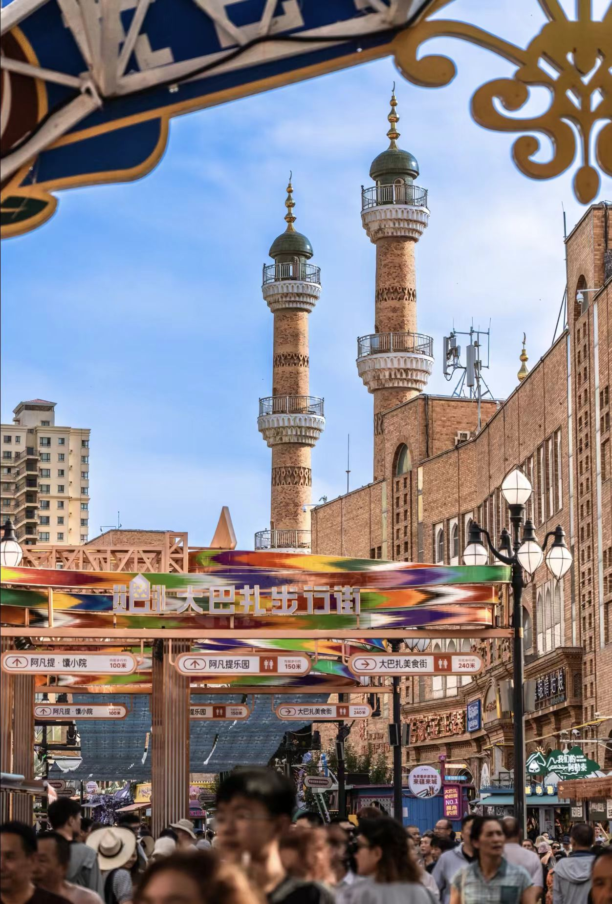

维吾尔族
维吾尔族是新疆的主体民族之一，有着悠久的历史和灿烂的文化。维吾尔族人民在长期的历史发展过程中，创造了丰富多彩的文化艺术，包括音乐、舞蹈、文学、建筑等多个领域。他们的传统服饰色彩鲜艳，饮食文化独特，节日庆典热闹非凡，展现了浓郁的民族特色。
民族概况
基本信息
民族名称：维吾尔族 / ئۇيغۇر يېزىگى
人口数量：约1162万
人口占比：约45.8%
主要分布：新疆天山以南地区，如喀什、和田、阿克苏等
文化特征
语言系属：阿尔泰语系突厥语族
文字：维吾尔文（阿拉伯字母体系）
宗教信仰：伊斯兰教
传统节日：诺鲁孜节、肉孜节、古尔邦节
常用维吾尔语
你好：亚克西姆斯孜 (Yakşımsız)
谢谢：热合麦特 (Rahmat)
维吾尔族文字
维吾尔文是维吾尔族使用的文字，属于阿拉伯字母体系。
维吾尔文示例：
ئۇيغۇر يېزىگى
جۇڭگو خەلق جۇمھۇرىيىتى
شىنجاڭ ئۇيغۇر ئاپتونوم رايونى

历史文化时间轴
民族起源
维吾尔族的先民丁零人在贝加尔湖一带活动
回纥汗国
建立了回纥汗国，后改名为回鹘
喀喇汗王朝
西迁的回鹘人建立了喀喇汗王朝
蒙古西征
蒙古西征，维吾尔族地区纳入蒙古帝国版图
新疆和平解放
维吾尔族人民进入新的历史时期
互动体验
打馕工坊
体验传统维吾尔族馕的制作过程，了解馕的历史和文化

逛巴扎
体验新疆传统市场的热闹氛围，了解当地的商品和文化
维吾尔族传统舞蹈
学习和体验维吾尔族的传统舞蹈艺术，感受民族文化的魅力
维吾尔族传统乐器体验
学习和体验维吾尔族的传统乐器，了解音乐文化
维吾尔族刺绣
学习维吾尔族的传统刺绣，了解手工艺文化
维吾尔族美食制作
学习制作正宗的维吾尔族美食，了解饮食文化
文化特色可视化
服饰文化
袷袢
袷袢是维吾尔族男子的传统服饰，通常用彩色绸缎或布料制成，右衽斜领，无纽扣，用长方巾扎腰。
花帽
花帽作为维吾尔族服饰的重要组成部分，种类繁多，有巴旦木花帽、奇曼花帽、曼波尔花帽等。
艾德莱斯绸连衣裙
女子的艾德莱斯绸连衣裙色彩斑斓，图案精美，体现了维吾尔族独特的审美情趣。
音乐舞蹈
热瓦甫
热瓦甫是维吾尔族最具代表性的弹拨乐器之一，音色明亮、清脆。
手鼓
手鼓是维吾尔族乐队中不可或缺的打击乐器，节奏感强烈。
麦西热甫
麦西热甫是维吾尔族人民喜闻乐见的传统歌舞娱乐活动，集歌、舞、乐于一体。
建筑风格
阿以旺
阿以旺是维吾尔族民居中最常见的建筑形式，意为"明亮的处所"，有天窗的夏室。土木结构、庭院式布局、装饰精美。
高台民居
高台民居是喀什地区特有的古老民居建筑群落，已有600多年历史。土木结构、庭院式布局、装饰精美。
清真寺
维吾尔族清真寺建筑宏伟壮观，装饰精美，体现了伊斯兰建筑艺术与维吾尔族传统建筑艺术的完美结合。
手工艺
艾德莱斯绸
艾德莱斯绸是维吾尔族特有的传统丝绸织品，采用古老的扎染工艺，色彩艳丽，图案独特。
维吾尔族地毯
维吾尔族地毯以其精美的图案、优良的质地和精湛的工艺闻名于世。
花帽与木雕
花帽是维吾尔族服饰的重要组成部分，种类繁多。维吾尔族木雕工艺同样令人叹为观止，图案精美，线条流畅。
非遗项目展示
国家级非遗
28项
自治区级非遗
120项
市级非遗
350项